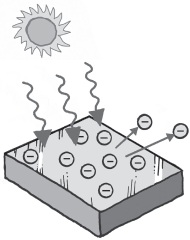

Tuhaf bir dalga ve daha da tuhaf bir parçacık
“Şiir nedir? Neden efendim, şiirin ne olmadığını söylemek çok daha kolaydır? Hepimiz ışığın ne olduğunu biliyoruz, ama ne olduğunu anlatmak kolay değil.” Samuel Johnson, bu sözlerin şiiri tanımlamanın güçlüklerini haklı çıkaran ikna edici bir açıklama olduğunu düşünüyordu. Maalesef ışığın ne olduğunu hepimizin bildiği fikrinde temel bir kusur vardır. Bilip bilmediğimiz belli değildir.
Johnson 18. yüzyıl İngiltere’sinde bu sözleri kaleme aldığında, Isaac Newton’ın ışığı enerji parçacıkları ya da “hücreleri” olarak gören bakış açısı hüküm sürüyordu. Johnson’ın ölümünü izleyen 20 yıl içinde Thomas Young ışığın bir parçacık değil dalga olduğunu kanıtladı. Bir yüzyıl sonra Albert Einstein, ışığın parçacıklardan oluştuğunu bir kez daha gösterdi. Şimdi ışığı hem parçacık hem dalga ya da ne parçacık ne dalga olarak düşünmemiz gerekiyor. Anlamayı ve vahiy edilmeyi ifade etmek için kullanılan evrensel bir metafor olan ışık şaşırtıcı derecede mattır.
Işık hakkında kesin olan bir şey vardır: O da ışığın varoluşumuz açısından temel önemde olduğudur. Güneşten gelen ışık olmasaydı bitkiler enerji toplayıp büyümek için fotosentezi kullanamazlardı, bizim de yiyecek bir şeyimiz olmazdı. Işıktan yoksun olan insanlar depresyondan mustarip olur. Fareleri altı hafta boyunca karanlıkta tutan araştırmacılar ışık eksikliği yüzünden hayvanların beyin hücrelerinin ölüp gitmesini izlemiştir. Doğrudan güneş ışığından yeterince yararlanmamak raşitizm gibi kemik sorunlarına yol açmaktadır. Işık her neyse, ona ihtiyacımız var.
Bu durum antik medeniyetler tarafından da kabul edilmiştir. Stonehenge’deki Neolitik anıt öyle görünüyor ki ışık veren güneş adına inşa edilmiş bir tapınaktır. Mısırlılar hayat verdiğini düşündükleri güneş tanrısı Ra’ya tapıyorlardı. Gerçi ışığın bir tanımını yapma girişiminde bulunan ilk halk olan antik Yunanlılar Mısırlılardan biraz daha temkinlilerdi: Onlara göre ışık saygı gösterilecek bir şey değil, evreni oluşturan dört temel elementten biri olan ateşin bir yan ürünüydü.
Yunanlıların ışığın doğası ve görmekle ilgili çeşitli görüşleri vardı. Öklid’in görüşü en gelişmiş görüştü. Öklid bir nesneden gelen ışığın gözün ışığıyla karıştığını söylüyordu; ama insan bir nesneyi gözün ateşi doğrudan nesneden yansıdığında görüyordu. Gelgelelim bu görüş modern bilimsel görüşe, sırf ışığın düz hatlar üzerinde yol aldığını söylediği için yakındır. Birinin çıkıp da ışıkla ilgili anlayışımızı ileriye götürme girişiminde bulunması için yaklaşık 2000 yıl beklememiz gerekecekti. Bu ilerlemenin tetiğini 17. yüzyılda Fransız René Descartes çekmişti.
Dalgalardan Parçacıklara,
Parçacıklardan Dalgalara
Descartes’ın katkısı uzun süreli olmamıştır. Descartes uzayın “plenum” dediği görünmez bir sıvıyla dolu olduğunu düşünüyordu. Plenumun “hareket eğiliminde” olduğunu söylüyordu; öyle ki bir mum plenumda, tıpkı bir davulun havada ses dalgaları yaratmasına benzer bir biçimde basınç yaratıyordu. Bu basınç göz yuvarına geçiyor, ışık olarak tezahür ediyordu. Isaac Newton bu fikir üzerine düşünmeye başlar başlamaz onu çürütmeye başladı.
Newton, ışık yalnızca plenumun göz üzerinde yarattığı basınçsa karanlık bir gecede koşmaya başlamanın dünyayı ışıkla doldurması gerektiğini savunuyordu. Newton, o sıralar doğmakta olan atom fikrinin, yani en küçük ölçekte her şeyin kendini oluşturan parçalara bölünebileceği fikrinin büyük hayranlarından biriydi. Bundan hiçbir şekilde farklı olmaması gerektiğini düşündüğü ışığın “hücrecik” dediği atomik elementlerden oluştuğunu ileri sürüyordu.
Hücrecik teorisi 150 yıl boyunca hüküm sürdü, fakat kolay ilerlemedi. Newton’ın büyük rakibi Robert Hooke, rakip bir dalga kuramı yaratmıştı (bu dönemdeki dalga kuramları ışığın içinde titreşimler yarattığı bir “eterin” varlığını varsaymışlardır); Hollandalı matematikçi ve gökbilimci Christian Huygens’in de bir dalga kuramı vardı. Her iki fikir de deneylerde uygunluk sınavını geçti. Hücreciklere yapışkan güçlerini veren sırf Newton’ın şöhreti oldu. Ardından 1803’te Thomas Young ışığın doğasının dalga olduğunu kesinlikle gösterdi.
Young’ın kanıtlaması, iki su dalgasının etkileşiminin öngörülebilir geometrik örüntüler yaratması gerçeğine dayanıyordu (bkz. Schrödinger’in Kedisine Ne Oldu?). Dalgaların tepe noktaları birleştiğinde “yapıcı bir karışım” oluşuyordu: Dalgaların boyutunun iki katı boyutunda bir dalga. İki dip nokta birleştiğinde, “yıkıcı karışım” dip noktanın iki katı derin olmasına yol açıyordu. Bir tepe nokta bir dip noktayla birleştiğinde sonuçta su dümdüz oluyordu. Su dalgalarının hızı ve hangi yönde yol aldıkları, en başta nasıl ayrıldıkları bilindiğinde suda oluşan dalga örüntülerini tahmin etmek mümkün oluyordu. Işık bir dalgaysa çifte kesikten geçtiğinde aynı olgunun ortaya çıkması gerekir. Birbiriyle etkileşim içindeki iki ışık dalgasının bir “karışım örüntüsü” oluşturması gerekir.
Esirle Karışmak
Young’ın artık lise fen laboratuarlarının başlıca köşetaşlarından biri haline gelmiş olan çifte kesik deneyi bunu gayet güzel bir biçimde işlemişti. Deney, hücrecik teorisini hemencecik öldürmüştü: Işık sorgusuz sualsiz dalgaya benziyordu. Geriye bir tek soru kalmıştı: Işık bir dalgaysa dalga neyin içinde hareket eder? Buna verilen ilk cevap Descartes’ın plenumuna benziyordu: Esir; uzayı ve zamanı dolduran bu hayali madde elektrik, ışık ve manyetizmanın içinde hareket ettiği ortamı oluşturuyordu. Gelgelelim 19. yüzyılın sonlarında gerçekleştirilen bir deney esirin var olmadığını gösterdi, en azından ışığın aktarımını mümkün kılacak bir şekilde var olmadığını.
1887’de Albert Michelson ile Edward Morley esirin mevcut olduğunu göstermeye soyundu. İnterferometre (girişim ölçer) deneyleri ışığın çeşitli yönlerdeki hızını ölçecek olan dönen bir masadan oluşuyordu. Deneyin arkasındaki fikir şuydu: “Esir rüzgârı” estiğinde, ışığın farklı yönlere farklı hızlarda hareket etmesi gerekecekti. Bu farklılık interferometrede kendisini gösterecek, karışım örüntüsünü değiştirecekti.
Deneyde esir tespit edilemedi; dönemin fizikçilerini şaşkınlığa uğratan bir gerçek olmuştu bu. Işığın bir boşlukta yol alabildiği, bu bakımdan temelde sesten farklı olduğu açık olsa bile, hâlâ bir şeyin içinde yol alması gerektiği varsayılıyordu. Işık dalga özellikleri gösteriyordu; ama içinde hareket edebileceği esir yoksa ışık insanların daha önce karşılaşmış olduğu cinsten bir dalga değildi. Açıklanamayacak bir muammaya varmış bulunuyorduk. Evet, ışık bir dalgaydı. Ama başka dalgalara benzemiyordu. Fiziğin en iyi kafalarının bazılarıysa ışığın dalga olmadığında ısrar ediyordu.
Hücrecik Dizginleri Yeniden Eline Alır
Herhalde Richard Feynman, bunu en güçlü biçimde ortaya koyan isim olmuştur. Öğrencilerine bir keresinde “Işığın bu biçimde, parçacık olarak geldiğini vurgulamak istiyorum,” demişti. “Işığın parçacık olarak davrandığını bilmek çok önemlidir, özellikle de okula gitmiş olanlarınız açısından, okulda muhtemelen size ışığın dalga gibi davrandığını anlatmışlardır. Size ışığın parçacık gibi davrandığını söylüyorum.”
<>
“Muhtemelen size ışığın dalga gibi davrandığını anlatmışlardır.
Size ışığın parçacık gibi davrandığını söylüyorum.”
RICHARD FEYNMAN
<>
Feynman’ın ısrarı ışığı dalga olarak resmetmekten sizi alıkoyamıyorsa şunu bir düşünün: Albert Einstein ışığın parçacık biçiminde geldiğini kanıtlamıştı. Bunu kanıtladığı, 1905’te yayınlanmış olan deneyi “fotoelektrik efekti” adını taşıyordu ve deneyin fiziği, solar gücün işleyişinin ardındaki fizikti. Bir metalin yüzeyine çarpan ışığın, metalden elektron salınmasına yol açacağı bir süredir bilinmekteydi. Gelgelelim ışığın frekansı yüksek frekansa, ışık tayfının mor ötesi ucuna doğru ilerlerken, salınan elektronların akışının neden artıyormuş gibi göründüğünü kimse anlamamıştır. Maxwell’in elektromanyetik kuramının buyurduğu üzere sağduyu, elektrik akımının ışığın frekansıyla değil, yoğunluğuyla artması gerektiğini söyler.
Einstein bu muammayı foton kavramıyla çözmüştü: Foton, kuantum ışık parçacığı olan bir enerji paketidir. Einstein’ın tahminine göre, metalin saldığı elektronların sayısı fotonun enerjisine dayanacaktır; fotonun enerjisi ışık “dalgasının” frekansıyla orantılıdır. Ancak belli bir asgari düzeyde enerjiye sahip fotonlar bir elektronu serbest bırakabilir. Bu eşiğin üstünde kalan bir enerjiyle metale çarpan fotonlar bir elektronu serbest bırakmakla kalmayacak, kendi fazladan enerjilerini de elektrona aktaracaklardır. Salınan elektronların kinetik enerjisinin ölçüldüğü deneyler durumun böyle olduğunu göstermiş, Einstein da 1921 Nobel Fizik Ödülü’nü kazanmıştır.
20. yüzyılın en büyük fizikçisinin, genel ve özel görelilik kuramlarının yaratıcısının Nobel Ödülü’nü fotonun keşfi yüzünden almış olması herhalde talihsizliktir. Nobel Ödülü’ne ve Feynman’ın ısrarlarına rağmen ışığın parçacıklardan oluştuğu fikri fiziğin en sallantılı kavrayışlarından biri olmayı sürdürmüştür. Elektronlar ya da protonların parçacık olduğunu düşündüğümüz gibi fotonların da parçacık olduğunu düşünmek kolaydır. Fakat fotonlar parçacığa o kadar benzemez. Örneğin kütleleri yoktur.

FOTOELEKTRİK ETKİSİ
Meşhur Bell Laboratuarları’nda ışıltılı kariyeri sırasında birçok önemli keşif yapmış olan fizikçi Willis Lamb “foton” kelimesinin fizikten silinmesi gerektiğini iddia edecek kadar ileri gitmişti. En iyi ihtimalle bu kelimenin izne tabi olması gerektiğini söylüyordu; bu izni de ışığın dalga olarak resmedilmesinden uzaklaşılması için gerçek bir ihtiyaç olduğunu hissettiği durumlarda Lamb verecekti.
Kozmosu Aydınlatmak
Parmağımızı ışığın doğasıyla ilgili temel noktalara pek fazla değdiremiyorsak da ışığın evrenle ilgili tanımlarımızda işgal ettiği asli rolle ilgili olarak söyleyebilecek hâlâ çok şeyimiz vardır. Hepsinden de önemlisi ışığın kozmosta en hızlı hareket eden şey olduğudur. Fizikçilerin, ışığın sonsuz derecede hızlı yol aldığına inandığı bir dönem olmuştu; uzak yıldızların ya da gezegenlerin ışığı bakışlarımızı göğe kaldırdığımız anda gözlerimize doluyordu. 17. yüzyılın sonuna gelindiğinde bu fikir ölüp gitti; deneyler sonlu bir ışık hızının, Jüpiter’in en içteki uydusu Io’nun düzensiz bir yörüngeye sahip olması gibi anormallikleri açıklayabileceğini gösteriyordu. Gelgelelim hiçbir şeyin ışıktan hızlı yol alamayacağı fikri, ilk başta, durup dururken ortaya atılmış gibi görünüyordu.
Bu fikir Maxwell’in elektromanyetik fenomeni tanımlayan denklemlerine ilişkin değerlendirmelerden doğmuştur. Bir elektrik yükünün –elektriğin– hareketinin yakınlarında bir manyetik alanın oluşmasına yol açtığını biliriz. Aynı manyetik alan büyüdükçe elektrik üretir. Ve böylece döngü tekrarlanır. Maxwell bu durumun, bir dalganın dalgalanan yoğunluğuyla hareket eden bir şeyden kaynaklandığını ve ileriye doğru hareket etme hızını hesaplayabileceğini bulmuştu. Gayet iyi bilinen bir değerdi bu; astronomların tutulmaların zamanını ve gezegenler ile uyduların yörüngelerini ölçerek ışık hızı olarak bulduğu değerin aynısıydı. Dolayısıyla Maxwell ışığın elektromanyetik bir fenomen olması gerektiği yönünde akıl yürüttü.
Fizikçiler elektromanyetik fenomenlerin tamamının iyi huylu olmadığını takdir edinceye kadar bütün bunlar gayet iyi gitti. Size göre hareket etmekte olan bir şeyin saldığı ışınımı analiz edin, Maxwell’in denklemlerine tam olarak uymadığını göreceksiniz. Einstein radikal bir adım atarak bu durumu düzeltmişti. Fizik kanunlarının hareket eden herkes açısından aynı olması gerektiğini varsayarak yeni bir kanun yapmıştı: Işık hızı her zaman sabittir ve hiçbir şey ışıktan hızlı hareket edemez.
Işık Hızını Sabitlemek
Bir arabanın farları yanınızdan geçtiğinde, yaydıkları ışık arabanın hareketiyle hızlanmaz. Dahası araba yavaşlarsa ışık yavaşlamaz. Işık her zaman saniyede 300 milyon metrenin biraz altında yol almaktadır. Einstein’ın özel görelilik kuramının özünü oluşturan, sezgilere ters düşen bu kavrayış muazzam derecede tuhaf sonuçlara yol açmaktadır (bkz. Zaman Nedir?). Fakat doğru olduğu sayılamayacak kadar çok deneyde gösterilmiştir. Einstein’ın görelilik kuramına göre, ışık hızına ne kadar yaklaşırsanız daha fazla ivme kazanmanız o kadar zorlaşır.
Bu etki, evrende düzeni yeniden tesis eder; ışınım salan şeyle ışınım tespit eden şey arasında göreli hareket ne kadar fazla olursa olsun, Maxwell’in denklemlerinin herhangi bir durumu betimlemesini mümkün kılar. İşleri bu zamana getirecek olursak elimizde artık Maxwell’in çalışmasının, kuantum elektrodinamiği olarak bilinen kuantum versiyonu bulunmaktadır; kuantum elektrodinamiği ışığın davranışını mükemmel bir biçimde betimlemektedir. Işık her ne olursa olsun, onun, koşullara bağlı olmaksızın sabit bir hızla hareket ettiğinin fark edilmesi, kozmosun geçmişi, şimdisi ve geleceğinin haritasını çıkarmamızı sağlamıştır.
Uzak bir yıldızdan gelen ışığı gördüğümüzde, ışığın uzayda olduğu kadar zamanda da hareket ettiğini biliriz. Güneşi her zaman sekiz dakika önceki haliyle görürüz; başka yıldızların ışığı bakışımızı geçmişin çok daha derinlerine götürür. Dahası yıldızları, ne kadar uzakta olduklarını bilerek gelişimlerinin çeşitli aşamalarında gördüğümüz için, bir yıldızın ömrü süresince neler olacağını söyleyebiliriz; bu bilgiyi gelecekte neler olacağını söylemek için kullanabiliriz. Örneğin güneşimizin izleyeceği yol artık gayet iyi anlaşılmıştır; Güneş’imizin ölmeye başlamasına 5 milyar yıl vardır; bu süreçte Güneş “kırmızı bir dev”e dönüşecek, Dünya dahil gezegenlerin çoğunu yutacaktır.
Gizemli Bir Güç
Işığı daha derinden kavramamızdan doğan bir başka büyük uygulama, 20. yüzyılı herhalde en iyi tanımlayan teknolojidir: Lazer. CD oynatıcıların, süpermarket kasa tarayıcılarının, yüksek hızlı optik telefon kablolarının ve düzeltici göz cerrahisinin devrinde, lazeri icat edenlerin lazerin ne için kullanılabileceğini bilmediklerine inanmak zordur.
Lazer bir kısaltmadır; Stimüle Edilmiş Işınım Salımıyla Işık Güçlenmesi (Light Amplification by the Stimulated Emission of Radiation/LASER) terimine karşılık gelir. Standart bir ampulün, hatta Güneş’in ışığı bile, tek tek ışık salan atomlardan gelir. Lazerin ardındaki prensip atomlardan oluşan bir gaza enerji vermek, sonra enerjiyi kontrollü bir biçimde serbest bırakmaktır: Atışlar “tutarlıdır”; bu demektir ki yoğun, güçlü bir huzme çıkarmak için bir araya kenetlenirler.
Bu duruma, atomlara bir miktar elektrik verip elektronlarından birini yüksek enerji durumuna taşıyarak ulaşılabilir. İkinci bir elektrik akımı bu elektronu aşağı indirecektir. Elektron düşerken bir ışık fotonu salar ve böylece zincirleme bir reaksiyonu başlatır. Fotonların her biri bir diğerini yüksek enerji durumundan çıkarır ve gazın içindeki başka atomları daha fazla foton salma yönünde harekete geçirir. Sonuçta lazer ışını ortaya çıkar.
---
IŞIKTAN DAHA HIZLI GİDEBİLİRSİNİZ
Işık hızında hareket etme fikri 1999’da Lene Hau, ışığı yavaşlatıp hızını hareket etmekte olan bir bisikletin hızına getirdiğinde yeni bir dönemeç aldı. Bu, iki lazerin kullanılmasıyla mümkün olmuştu: Lazerlerden biri bazı sodyum atomlarını “hazırlayacak” bir ışık huzmesi, diğeri ise “yavaşlayacak” bir ışık huzmesi salıyordu. “Hazırlayıcı” ışık huzmesinin enerjisi, sodyum atomlarının “yavaşlayan ışık huzmesini” yutmamalarını sağlayacak bir değere ayarlanmıştı. Bu da normalde yutulacak olan huzmenin atom bulutları arasından yol alması anlamına geliyordu.
Fakat ışık huzmesi yol alırken enerjisinin bir bölümünü sodyum atomlarına verir. Bu atomlar enerjiyi bir an tutar; sonra salıp yol almakta olan huzmenin içine bırakırlar yine. Sonuç biraz bir trenin ön vagonlarını çıkarıp arkaya yeniden takmaya benzer. Vagonlar normal hızda yol alıyor olsalar da bir bütün olarak trenin ilerlemesi bozulur.
Dolayısıyla ışık hızı azaltılmış olsa da aslında bu bir el oyunudur. İki yıl sonra Hau bir adım daha atıp ışığı izlediği yollarda durdurarak dünyayı şaşırttı. Bunu yapabilmek için atomların kuantum hali, enerjiyi gerektiği kadar uzun süre tutabilecekleri noktaya kadar değiştirildi. Hau, ışığı atomları bu halden çıkararak serbest bıraktı.
---
Lazerlerin ardındaki mekanizmayı, foton yaklaşımını kullanarak açıklamak çok kolaydır; fakat ışının gücü dalga tanımına daha uygundur. Dalgaların, örneğin su dalgalarının “fazda” karşılaştıklarında, yani zirve noktalarının birleşmeleri halinde çoğaldığını biliyoruz. Sonuçta muazzam derecede güçlü bir dalga ortaya çıkar ki esasen lazer ışını da böyle bir dalgaya benzemektedir.
Lazeri bu kadar yararlı kılan sadece gücü değildir. Fotonların birbirine kilitlenmesiyle birlikte ışığın bu kadar sıkı bir biçimde kontrol ediliyor olması, lazeri Ay’ın ne kadar uzakta olduğunu bulmaktan tutun atomun sırlarını araştırmaya kadar çok çeşitli biçimlerde kullanılan büyük bir bilimsel araç haline getirir. Buradan türeyen uygulamalar, örneğin barkotların taranması, CD’lerdeki bilgilerin okunması, modern telekomünikasyon sanayinin mümkün hale gelmesi, lazer pastasının üzerindeki kremadır sadece.
Gelgelelim lazer hakkında hiçbir şey ışığın bir dalga mı yoksa bir parçacık mı olduğuyla ilgili tartışmayı çözüme kavuşturmaz. Işığın bize evren hakkında söylediklerini yorumlayabilme ve onun gücünü etrafımızdaki dünyayı değiştirmek için kullanma becerimize rağmen, ışığın doğası ele geçmezliğini korumaktadır. Thomas Young artık çifte kesik deneyini –ışığın dalga olduğunu kanıtlayan deney– taklit edebildiğimizi ve düzeneği, ışığın bir parçacığın doğasına sahip olduğu açıklamasını yaşayabilir tek açıklama kılacak şekilde uyarlayabildiğimizi görseydi hayrete kapılırdı. Işığı bir dalga olarak gören bakış açısıyla bir parçacık olarak gören bakış açısını birbirine bağlamanın iyi bir yolunu bilmiyoruz hâlâ. Bu muamma, kuantum kuramının kalbinde yatmakta ve gizemini korumaktadır (bkz. Schrödinger’in Kedisine Ne Oldu?). Işık nedir? Bir dalçacık.